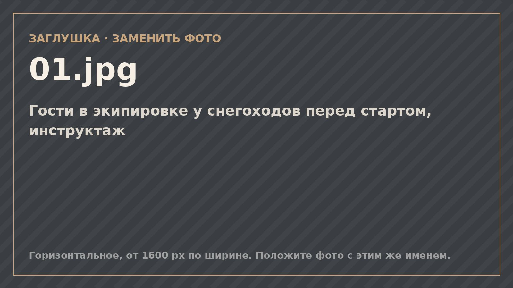
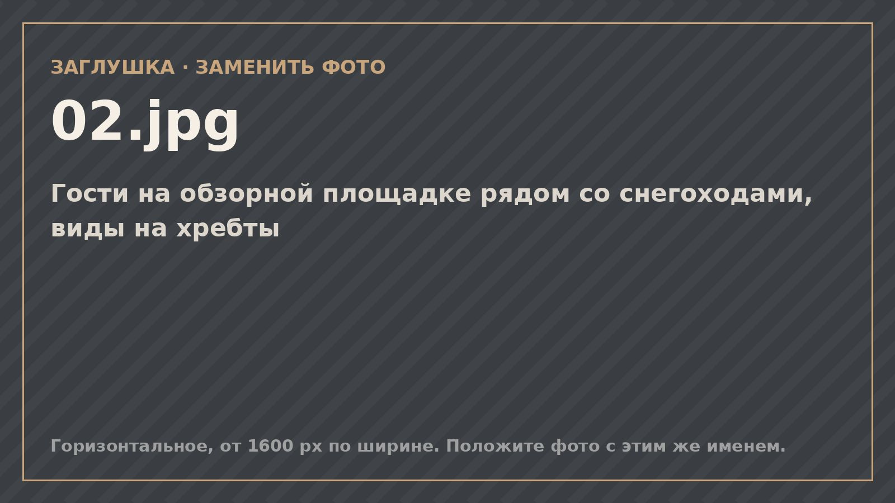
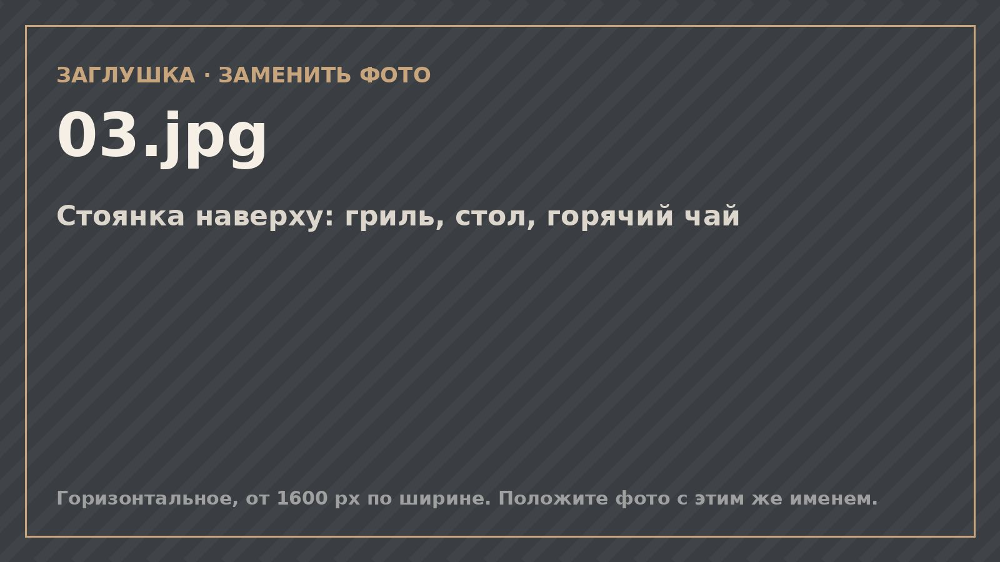

Зимой под Риддером можно подняться туда, куда летом идут пешком полдня. Снегоход проходит этот путь быстрее ратрака и заезжает в точки, куда большая машина не повернёт. Ниже — как устроен наш выезд, сколько он стоит и как одеться, чтобы не замёрзнуть.
Как проходит день
Выезд начинается в Риддере. Забираем вас на наших внедорожниках и около 45 минут едем до базы, где стоит техника. Точку старта выбираем по погоде и по тому, где в этот день снегоходы, и сообщаем её, когда подтверждаем дату.

На базе — короткий инструктаж. Дальше садитесь по двое на снегоход, управляют наши гиды. Вам не нужно уметь водить: ваша задача — держаться и смотреть по сторонам.
Подъём — 10–15 км по горам до перевала высотой около 2000 метров. По дороге останавливаемся на обзорных площадках: хребты, заснеженная тайга, время на фото.

Наверху — стоянка. Столы, гриль, горячий чай, обед. Есть время погулять и поснимать. Вниз спускаемся тем же путём до базы, оттуда — трансфер в Риддер. Весь выезд из Риддера занимает 5–6 часов.
Чем снегоход отличается от ратрака
Маршрут у обеих программ один, разница в технике и размере группы.
- Снегоходы — 2–6 гостей. Подъём быстрее, больше динамики, можно заехать в дополнительные точки.
- Ратрак — до 12 гостей в салоне с климат-контролем, вся группа едет вместе. Спокойнее и теплее, подходит для семей и компаний. Подробнее — в статье про ратрак в Риддере.
Сколько стоит
Цена за человека зависит от размера группы. Стоимость выезда — техника, водители, гид — почти одинаковая, едет вас четверо или шестеро, и она делится на всех. Поэтому в полной группе дешевле.
Цена «от 80 000 ₸» — для группы из 4–6 человек. Если вас меньше, назовём точную цену под ваш состав или предложим присоединиться к сборной группе по выходным.
В стоимость входят:
- техника и топливо;
- гид и водители снегоходов;
- трансфер из Риддера до старта и обратно;
- обед наверху и горячий чай;
- экипировка без доплаты.
Трансфер из Усть-Каменогорска или с базы отдыха считаем отдельно, по запросу.

Что надеть
На снегоходе холоднее, чем кажется: ветер от скорости, а наверху ещё и высота. Одевайтесь слоями.
- Термобельё — нижний слой.
- Флиска или тёплая кофта — средний слой.
- Непродуваемая куртка и штаны — верхний слой, лучше горнолыжные.
- Тёплые зимние ботинки с толстой подошвой.
- Две пары перчаток или варежки и запасная пара.
- Шапка, баф или балаклава на лицо.
- Солнцезащитные очки или маска — снег наверху слепит.
Возьмите термос, если любите что-то своё, и полностью заряженный телефон: на холоде батарея садится быстро.
Частые вопросы
Нужно ли уметь управлять снегоходом?
Нет. Снегоходами управляют наши гиды, гости едут по двое за водителем.
Сколько человек нужно для выезда?
От 2 до 6. Самая выгодная цена — в группе 4–6 человек. Если вас двое или трое, назовём цену под ваш состав или предложим сборную группу.
Можно ли с детьми?
Напишите нам возраст детей при бронировании — подскажем, подойдёт ли снегоход или лучше выбрать ратрак с тёплым салоном.
Что делать, если испортится погода?
Гид отвечает за безопасность группы и может изменить или перенести маршрут, если этого требуют погода или снег. Мы всегда предложим другую дату.
Как забронировать?
Напишите нам в WhatsApp или оставьте заявку на странице зимних программ. Даты закрепляются предоплатой. Новогодние даты разбирают первыми.